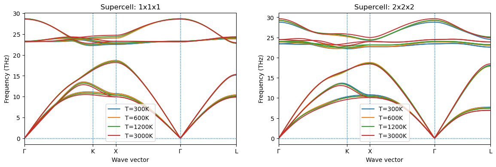
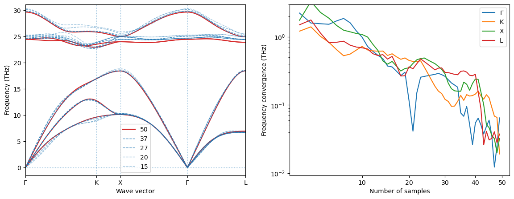

Phonon convergence monitoring¶
Phonon monitoring is a more complicated issue and requires additional external tools. Here we include only few examples to guide you how it could be done using tools provided in
dxutilsandalamodeand to show the kind of physical results which could be obtained with the help of HECSS. For more examples see the SciPost Phys. 10, 129 (2021) paper and the works citing it (list avaliable on the SciPost page).
Note: The phonon monitoring functions are not complete and are at the alpha level. Thus, they may not work as described or at all.
fig, axs = plt.subplots(1,2,figsize=(14,4))
for sc, ax in zip(('1x1x1', '2x2x2'), axs):
plt.sca(ax)
for T in 300, 600, 1200, 3000:
plot_bands_file(f'example/VASP_3C-SiC_calculated/{sc}/T_{T}K/phon/cryst.bands', lbl=f'T={T}K')
plt.legend()
plt.title(f'Supercell: {sc}');

T = 3000
supercell = '2x2x2'
monitor_phonons(directory=f'example/VASP_3C-SiC_calculated/{supercell}/phon/',
dfset=f'../T_3000K/DFSET.dat',
kpath='3C_SiC', charge='3C_SiC', sc=f'../sc/CONTCAR',
order=1, # Change to 2 if you want to monitor cubic potential
cutoff=10, # Interaction range in Bohr. Do not increase too much.
born=2, # Change to None to deactivate
# Born effective charges calculation
k_list=None, # Change to string with points (e.g. 'KX')
# to plot selected points
once=True, # Show the plot and exit
)
